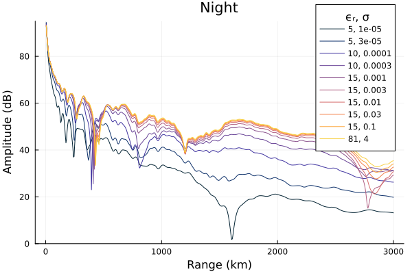

Ground
LongwaveModePropagator treats the ground boundary of the Earth-ionosphere waveguide as a homogeneous, nonmagnetic material described by its electrical conductivity $\sigma$ and relative permittivity $\epsilon_r$.
In this example we'll compare the effect of ground conductivity on amplitude along the ground in the waveguide for day and nighttime ionospheres.
using Plots, Printf
using LongwaveModePropagator
const LMP = LongwaveModePropagatorLWPC uses standard ground indices to describe combinations of relative permittivity and conductivity. The standard indices can be accessed from LMP as GROUND.
sort(GROUND)OrderedCollections.OrderedDict{Int64, Ground} with 10 entries:
1 => Ground(5, 1.0e-5)
2 => Ground(5, 3.0e-5)
3 => Ground(10, 0.0001)
4 => Ground(10, 0.0003)
5 => Ground(15, 0.001)
6 => Ground(15, 0.003)
7 => Ground(15, 0.01)
8 => Ground(15, 0.03)
9 => Ground(15, 0.1)
10 => Ground(81, 4.0)We'll define all of the constant types and the day and night profiles.
# Constant values
const BFIELD = BField(50e-6, π/2, 0)
const TX = Transmitter(20e3)
const RX = GroundSampler(0:5e3:3000e3, Fields.Ez)
const DAY = Species(LMP.QE, LMP.ME, z->waitprofile(z, 75, 0.3), electroncollisionfrequency)
const NIGHT = Species(LMP.QE, LMP.ME, z->waitprofile(z, 82, 0.6), electroncollisionfrequency)We'll define a function to which we can pass the day or night Species and return the electric field amplitude.
function varyground(prf)
amps = Vector{Vector{Float64}}(undef, length(GROUND))
for i = 1:length(GROUND)
wvg = HomogeneousWaveguide(BFIELD, prf, GROUND[i])
E, a, p = propagate(wvg, TX, RX)
amps[i] = a
end
return amps
endAnd here's a function to plot each of the curves.
function buildplots!(p, amps)
cmap = palette(:thermal, length(GROUND)+1) # +1 so we don't get to yellow
for i = 1:length(GROUND)
plot!(p, RX.distance/1000, amps[i];
label=@sprintf("%d, %.1g", GROUND[i].ϵᵣ, GROUND[i].σ), color=cmap[i]);
end
endFirst, the daytime results.
amps = varyground(DAY)
p = plot()
buildplots!(p, amps)
plot!(p; size=(600,400), ylims=(0, 95), title="Day", legend=(0.85, 1.02),
xlabel="Range (km)", ylabel="Amplitude (dB)", legendtitle="ϵᵣ, σ")
And now nighttime.
amps = varyground(NIGHT)
p = plot()
buildplots!(p, amps)
plot!(p; size=(600,400), ylims=(0, 95), title="Night", legend=(0.85, 1.02),
xlabel="Range (km)", ylabel="Amplitude (dB)", legendtitle="ϵᵣ, σ")
Low ground conductivity can have a significant influence on the signal propagation - there is strong attenuation. These low conductivities can be found in areas of sea or polar ice and industrial or city areas.
The influence of ground conductivity on the received signal has similar impact on the day and night scenarios.
This page was generated using Literate.jl.